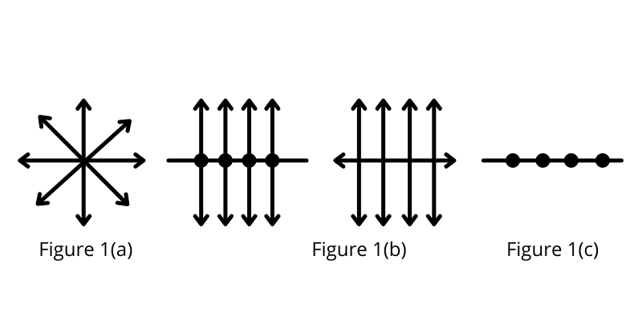
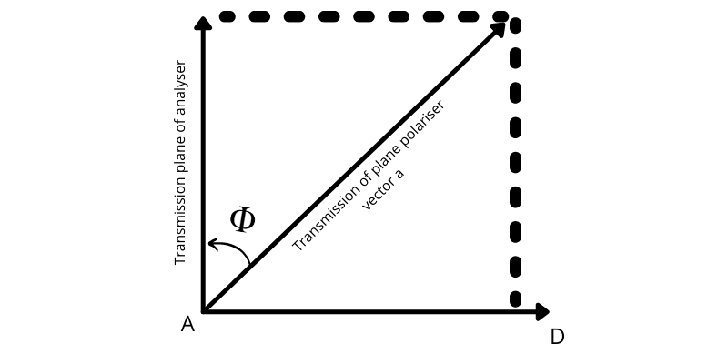
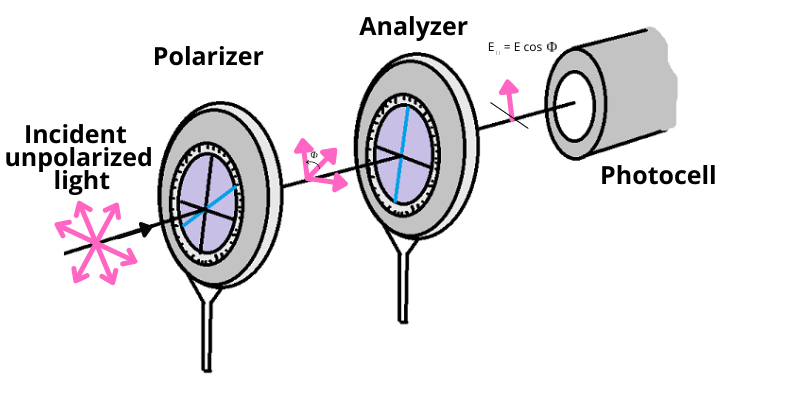
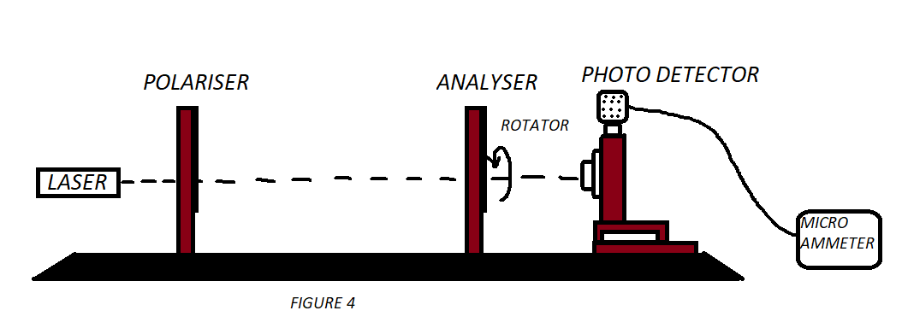
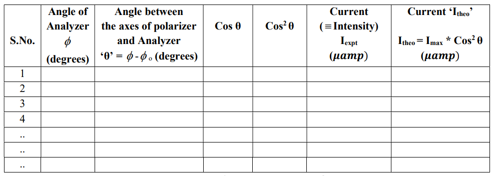
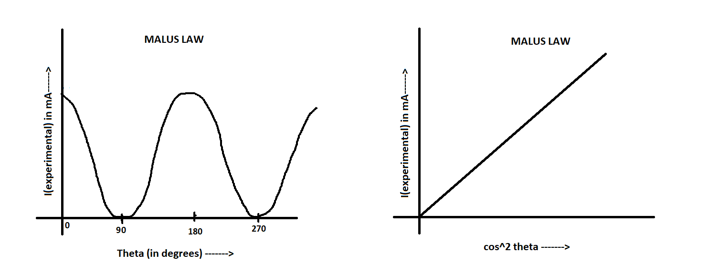

To verify the Law of Malus for plane polarised light.
The light coming from the Sun, candle light, and light emitted by a bulb is an ordinary light and is known to be un-polarized. In an un-polarized light electric and magnetic field vectors vibrate in all possible directions perpendicular to each other and also perpendicular to the direction of propagation of light. Unpolarised light can be represented as shown in fig. 1(a). The unpolarised light can be considered to be composed of two linear orthogonal polarization states with complete incoherence. When unpolarized light is incident on an ideal polarizer, the intensity of the transmitted light is one-half of the incident light. Also if the polarizer is rotated w.r.t. incident light there is no change in the irradiance of the transmitted light i.e. its intensity remains half of the incident light.
Certain transparent materials such as Nicol, Tourmaline are capable of filtering and allowing light waves having vibrations in only one plane. Such materials are called Polaroids. This filtering is possible due the structure of the material that is having its cells arranged in a straight line manner only in one direction (parallel to the pass axis of polarizer) which is represented in fig. 1(b) & fig. 1(c). This phenomenon of filtering and producing light waves having vibrations confined to one particular direction is called polarization. Polarization is a property of a material by which light waves are filtered and made directional.

When light falls on a polarizer, the transmitted light gets polarized. The polarized light falling
on another Polaroid, called analyzer, transmits light depending on the orientation of its axis with
the polarizer. The
intensity of light transmitted through the analyzer is given by Malus’ law. The law describes how
the intensity of light transmitted by the analyzer varies with the angle that its plane of
transmission makes with that of
the polarizer. The law can be stated in words as follows:
The intensity(I) of the transmitted light varies as the square of the cosine of the
angle(φ) between
the two planes of transmission. :
I ∝ cos2 φ

Let us suppose , that the angle between the planes of transmission of the polarizer and
the analyser
is
φ at any instant (above graph). The electric vector AB = vector a in the plane polarised light
emerging from the polariser
may be resolved into two components AC(=a cos φ) and AD(=a sin φ) which are respectively
along
and perpendicular to the plane of transmission of the analyser. The perpendicular component is
eliminated in the analyser
while the parallel component is freely transmitted through it. Therefore, the intensity I of light
that
emerges from the analyser is given by
I ∝ a2 cos2 φ I ∝ I0 cos2 φ
where I0is the intensity of the plane polarised light incident in the analyser. The
intensity of the transmitted light is maximum when
φ = 90oor when the polariser and analyser are crossed.
cos2φ,it would be a straight line, thus verifying Malus' Law.
Intensity of the transmitted light is given by
It2= At2=A02 cos2θ=I0 cos2θ


Animation of the experiment:--
Click here to perform the simulation
Angle of Analyzer when current is maximum Φ o = ....... (degrees)
Maximum Current Imax= ......(μ amp)

Write at your own how the Malus law have been verified from your experimental data.
